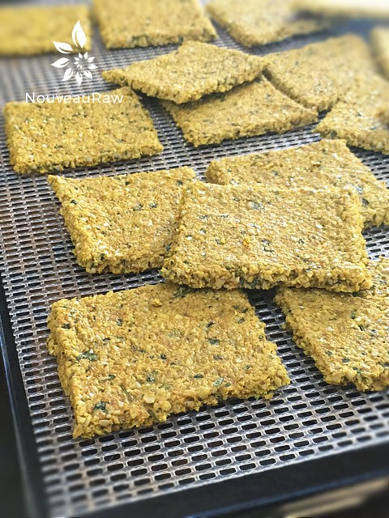
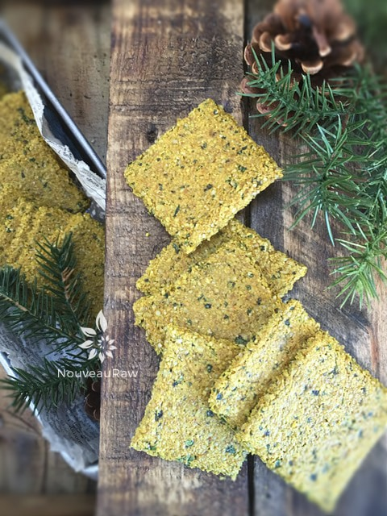
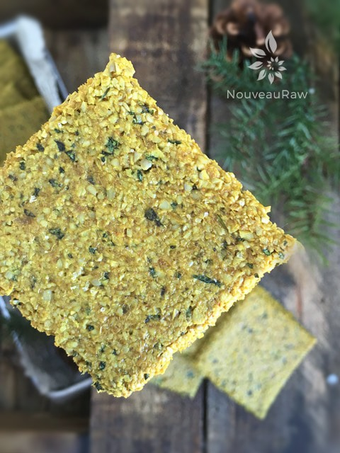
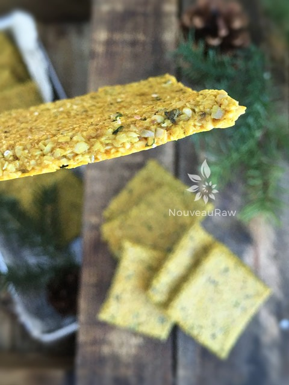

Thai Crackers

~ raw, gluten-free, vegan, nut-free ~
As I started to make the preparations to create this cracker recipe, old spice-drawer-fears started to creep up. I came into this world of healthy eating with baggage. Spices and I didn’t start off on the right foot. I have shared this before so if you are an ole’ timer here, you are aware of this… but I couldn’t push aside the memories as I emptied a quarter of my spice drawers on onto the countertop. lol
Yea, I know. The ingredient list is long and at first glance, this recipe seems far too complicated to even want to get involved with. But it is my job to comfort and encourage you, to put my hand on your shoulder and look you straight in the eyes (I might start laughing because it’s hard for me to be so serious)… and assure you that it’s very easy to whip together and make.
To create this flavorful cracker you are just going to have to man-up or woman-up and remove the lids of ten (I counted) spice bottles and scoop a little specialness out of each.
If you can just surrender, take a deep breath, and enjoy the spice-scooping process… you will find out that these crackers are amazing.
Not only are they nut-free, grain-free, and gluten-free, they are loaded with nutrients and bold with flavor. I should clarify, just because there are lots of spices it doesn’t mean that it is spicy, as in hot. There is, however, a tiny wave of heat that comes and goes very quickly.
My intent was to dream up some type of dip, spread or raw cheese to put on top. But I knew that inspiration had to come after tasting them. And that is when all my plans were shot to heck. They didn’t need any dip, spread, or raw cheese on top. They had such a wonderful flavor that there is no reason to mask it.
Structurally, this is a pretty darn sturdy cracker and has a nice snap to them. Nibbling? ha! Who am I trying to kid… I managed to fit 1/2 a cracker in my mouth without a thought. So now comes the time where I unleash you so you can head into the kitchen. Again, don’t be afraid of the spices. Know that I am with you in spirit and will guide you every step of the way. So put on your big girl panties… or big boy boxers… and get busy. Please let me know how it goes. Have a blessed day, amie sue
yields 24+ crackers
- 2 cups raw sunflower seeds, soaked
- 1/2 cup water
- 2 Tbsp lime juice
- 1 Tbsp maple syrup
- 2 Tbsp tamari soy sauce
- 1 Tbsp cumin
- 1 Tbsp onion powder
- 2 tsp garlic powder
- 1 tsp ground ginger
- 1 tsp ground turmeric powder
- 1 tsp dried oregano
- 1/2 tsp Himalayan pink salt
- 1/2 tsp cayenne powder
- 1/2 tsp chili powder
- 1/2 cup fresh cilantro
- 1 Tbsp fresh basil
Preparation:
- In the food processor combine the; sunflower seeds, cilantro, water, lime juice, maple syrup, Tamari, cumin, onion powder, garlic powder, ginger, turmeric, oregano, salt, cayenne, and chili powder. (shew, I think I got it all). Process to a paste-like texture.
- Add the basil and cilantro last so you can leave green flecks in the batter. This adds a nice splash of color in the end product.
- Spread the batter approximately 1/4″ thick on a non-stick sheet that fits the dehydrator.
- To create an even and compact cracker, I cover with plastic wrap and gently roll it flat.
- Square up the edges and score the crackers into desired shapes and sizes.
- I used my 6 wheel pastry cutter which can be found (here).
- Dehydrate at 145 degrees (F) for 1 hour, then reduce to 115 degrees (F) for 8 hours or until dry.
- Part way through the dry time, transfer the crackers to the mesh sheet that fits the dehydrator. This will speed up the dry time.
- Store in an airtight container for 5-7 days.
Culinary Explanations:
- Why do I start the dehydrator at 145 degrees (F)? Click (here) to learn the reason behind this.
- When working with fresh ingredients it is important to taste test as you build a recipe. Learn why (here).
- Don’t own a dehydrator? Learn how to use your oven (here). I do however truly believe that it is a worthwhile investment. Click (here) to learn what I use.




© AmieSue.com